Обзор
В этом уроке мы рассмотрим, как можно настроить объект-манекен на уровне и использовать узлы потокового графа для сценария его поведения. Мы конкретно рассмотрим:
- Создание объекта Mannequin.
- Воспроизведение некоторых фрагментов через Flowgraph.
- Настройте последовательность фрагментов, плавно переходящих от одного к другому.
- Настройка синхронизированной анимации.
В качестве отправной точки для этого урока мы будем использовать только пустой Mannequin настройка, находится в папке: <GameFolder>/Animations/Mannequin/ADB/mannequin_workshop/mannequin_workshop_start/
Данная установка включает в себя все необходимые Mannequin файлы, хотя на данный момент они в основном пусты. В рамках урока мы будем добавлять несколько новых фрагментов. Для справки: завершенные файлы учебных пособий также можно найти в папке mannequin_workshop_finished.
Перед выполнением этого урока рекомендуется немного ознакомиться с редактором Mannequin. Если вы новичок в Mannequin, пожалуйста, посмотрите Mannequin Урок по редактору сначала.
Создание объекта Mannequin
Mannequin обычно используется для управления сложными символами, и вполне вероятно, что создание этих символов в основном будет управляться кодом.
Тем не менее, по-прежнему возможно использовать тип объекта «Объект Mannequin» для создания персонажа, который может содержать Mannequin настройки и, следовательно, поддерживать любую функцию, которую вы сможете использовать на любом Mannequin-управляемый характер.
Для этого просто создайте новую сущность типа Аним/MannequinObject на вашем уровне.
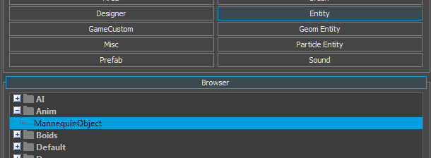
В свойствах сущности вам нужно будет назначить своему персонажу Mannequin файл определения контроллера, база данных анимации и модель. Мы будем использовать следующие активы:
Animations/Mannequin/ADB/mannequin_workshop/workshop_setup_start/workshop_controller_def.xmlAnimations/Mannequin/ADB/mannequin_workshop/workshop_setup_start/workshop_adb.adbObjects/characters/human/sdk_player/sdk_player.cdf
Свойства объекта на этом этапе должны выглядеть следующим образом:
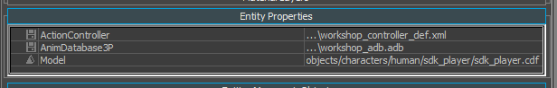
В окне просмотра редактора уровней вы теперь должны видеть персонажа, стоящего в Т-позе. Обратите внимание: хотя анимация не воспроизводится, у персонажа в этот момент есть правильный Mannequin настройка.
Это означает, что мы можем, например, использовать CVar mn_debug, чтобы увидеть Mannequin состояние нашей сущности.
Ввод текста mn_debug MannequinObject1 в консоли мы теперь должны увидеть основные Mannequin информация об отладке отображается на экране:
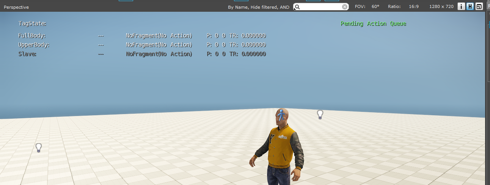
Вы можете видеть, что, хотя ни один фрагмент не воспроизводится, область действия «Полное тело» и «Верхняя часть тела» правильно привязаны к персонажу, а область «Раб» в настоящее время неактивна.
Воспроизведение фрагментов через FlowGraph
Теперь, когда у нас есть наш Mannequin правильно настроив персонажа на уровне, мы начнем создавать и воспроизводить на нем некоторые фрагменты.
Давайте откроем редактор Mannequin и загрузим соответствующие настройки предварительного просмотра: <GameFolder>/Animations/Mannequin/ADB/mannequin_workshop/workshop_setup_start/workshop_preview.xml
Обратите внимание, что в настоящее время эта настройка совершенно пуста:
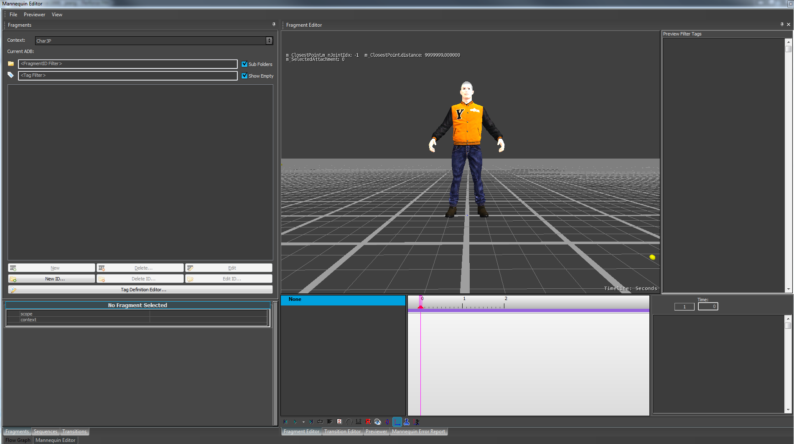
Создание фрагмента всего тела
Первое, что мы сейчас сделаем, это создадим простой «Idle» FragmentID. Мы назначим ему только область «Полное тело», поэтому обязательно снимите флажки «Верхняя часть тела» и «Подчиненный».
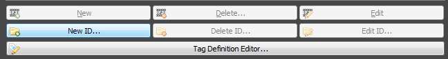
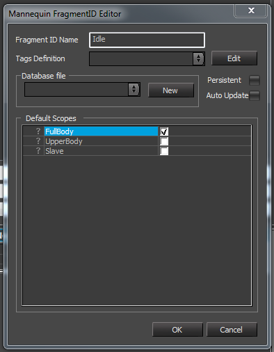
Теперь мы добавим простой фрагмент к этому новому FragmentID. Мы создадим только один слой анимации с одним клипом и воспроизведем анимацию «relaxed_tac_idle_nw_3p_01». Фрагмент должен выглядеть так:
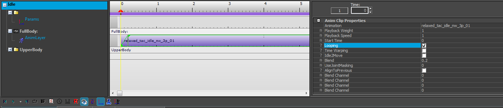
Мы закончили настройку Mannequin для этого первого шага. Теперь мы позаботимся о настройке простого FlowGraph, который будет воспроизводить только что созданный нами фрагмент.
Для этого вернитесь в редактор уровней, щелкните правой кнопкой мыши по нашему персонажу и выберите «Создать Flow Graph». Имя графика не имеет значения для этого урока.
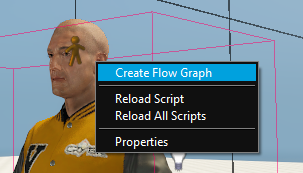
Затем в нашем графе мы будем использовать узел Actor:PlayMannequinFragment для запроса только что созданного фрагмента «Idle».
Мы подключим его к узлу Game:Start, чтобы он автоматически запускался при запуске игры. График должен выглядеть следующим образом:
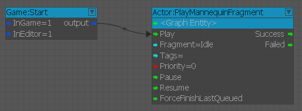
Чтобы увидеть график в действии, мы можем либо перейти в игру, либо просто переключить «AI/Физика». кнопка. Сделав это, вы теперь увидите, как наш персонаж воспроизводит нужный фрагмент.
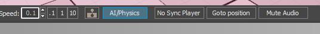
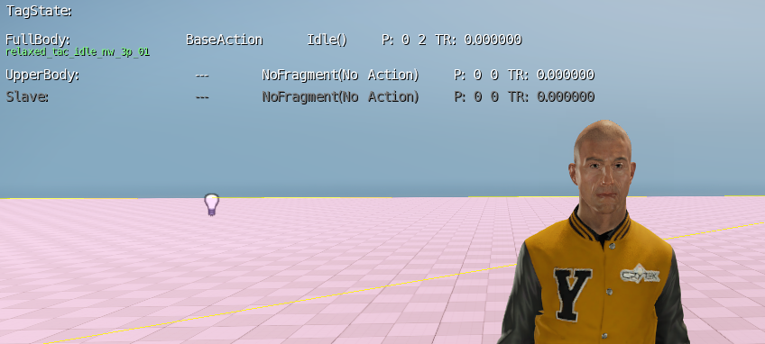
Теперь мы видим, что наш фрагмент Idle правильно воспроизводится в области Fullbody.
Создание фрагмента верхней части тела
Аналогично тому, как мы создавали фрагмент всего тела, теперь мы создадим фрагмент верхней части тела. Для этого давайте вернемся в редактор манекенов и создадим новый FragmentID, который назовем "Upperbody_Detail".
Давайте убедимся, что в диалоговом окне создания FragmentID используется только область видимости «Верхняя часть тела»:
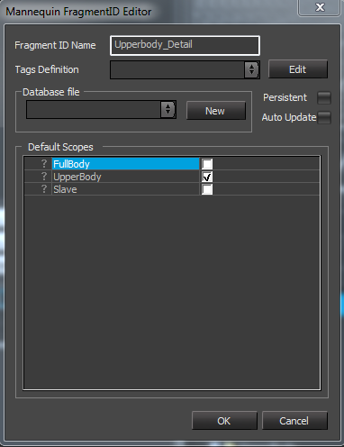
Опять же, теперь мы создадим простой фрагмент только с одним анимационным клипом. Давайте использовать «relaxed_tac_lookaround_rifle_add_3p_01».
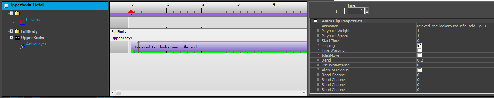
Возвращаясь к нашему Flowgraph, мы теперь также запросим этот новый FragmentID с помощью Actor:PlayMannequinFragment узел.
Просто ради тестирования мы также добавим некоторые задержки для запуска и остановки этого фрагмента верхней части тела, пока фрагмент всего тела все еще работает. Тогда блок-граф должен выглядеть примерно так:
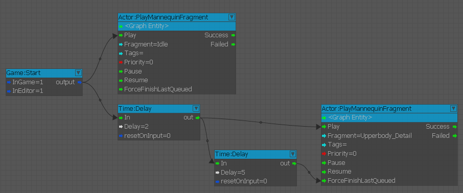
Заглянув в игру, мы теперь видим, что через пару секунд фрагменты всего тела и верхней части тела будут воспроизводиться одновременно.
Через пять секунд анимация верхней части тела прекратится, но анимация всего тела продолжится.
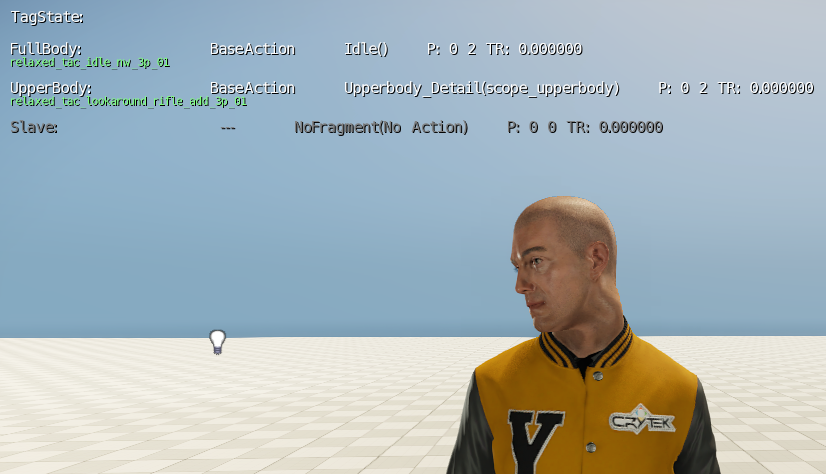
Настройка перехода
Теперь, когда мы увидели, как независимо воспроизводить некоторые фрагменты на разных уровнях (например, FullBody и Upperbody), мы рассмотрим, как воспроизводить последовательность фрагментов и как настроить переход между ними. Для этого мы создадим новый FragmentID с именем "OfficerListen", играющий только в области Fullbody. И снова мы поместим туда один анимационный клип, указывающий на клип «relaxed_tac_officerlistening_nw_3p_01». Давайте теперь обновим наш FlowGraph, чтобы мы воспроизводили этот фрагмент после уже настроенного нами Idle-фрагмента. На данный момент фрагмент UpperBody нам больше не нужен, поэтому мы просто удалим его из графа.
В FlowGraph вы заметите, что если вы запросите вновь созданный "OfficerListen" FragmentID после Idle, по умолчанию ничего не произойдет, и персонаж продолжит играть в "Idle". Это связано с тем, что по умолчанию оба запроса будут иметь одинаковый приоритет (0), а «Idle» зацикливается, что означает, что он не остановится автоматически, если мы не запросим что-то с более высоким приоритетом. Чтобы справиться с этим, мы просто назначим «OfficerListen» приоритет 1, чтобы гарантировать, что «Idle» будет прерван. Тогда FlowGraph должен выглядеть так:
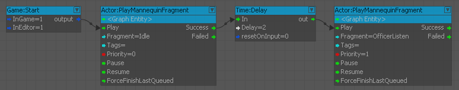
Зайдя в игру, вы увидите, что оба фрагмента воспроизводятся последовательно, как и следовало ожидать. Однако на этом этапе мы, возможно, захотим настроить переход между этими двумя фрагментами. Допустим, при переходе от «Idle» к «OfficerListen» мы всегда хотим воспроизвести анимацию приветствия. Этого легко добиться, настроив переход в редакторе Mannequin.
Более подробные инструкции по использованию редактора переходов см. Mannequin Урок 3 по редактору — Переходы.
Давайте теперь переключимся на редактор переходов Mannequin. Итак, давайте создадим новый переход от Idle к OfficerListen.
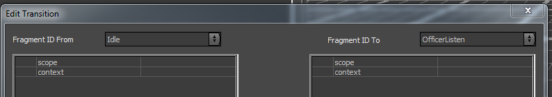
В этом переходе мы просто добавим промежуточную анимацию приветствия между анимационными клипами «холостой ход» и «слушание». Давайте использовать «relaxed_tac_idle_saluteofficer_rifle_3p_01». Тогда переход должен выглядеть так:
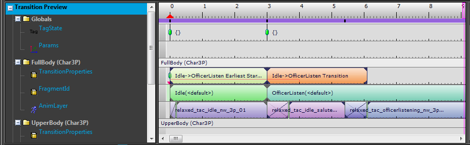
Вернувшись в игру, вы теперь должны увидеть, что при запросе «OfficerListen» FragmentID переход, который мы только что настроили, воспроизводится правильно. Во внутриигровом отладочном рендеринге Mannequin вы можете видеть, что анимация перехода действительно поставлена в очередь:
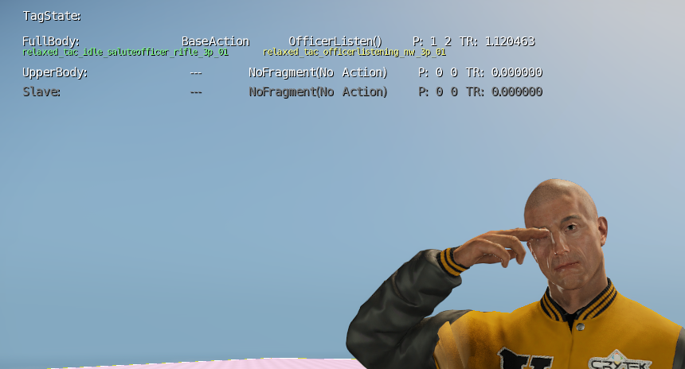
Настройка синхронизированной анимации
До сих пор мы видели, как воспроизводить фрагменты на разных слоях с помощью FlowGraph. Теперь мы рассмотрим, как настроить синхронизированную анимацию в Mannequin.
Первое, что нужно сделать, это настроить синхронизированные фрагменты в Mannequin. Давайте перейдем к редактору и создадим новый FragmentId под названием "Synced_Animation", работающий в областях "FullBody" и "Slave":
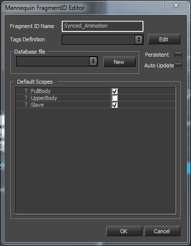
Теперь нам нужно создать по одному фрагменту для каждой области видимости. Чтобы их различать, нам нужно установить тег «scope_slave» на подчиненном.
Нам также необходимо настроить тег «context_slave» на обоих. Этот тег будет использоваться, чтобы сообщить игре и редактору, какого персонажа мы хотим использовать в качестве раба. В конечном итоге фрагменты должны выглядеть в браузере фрагментов следующим образом:
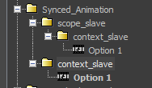
При выборе одного из этих фрагментов вы теперь должны увидеть два символа в окне просмотра редактора Mannequin.
Однако по умолчанию они оба будут находиться в одном и том же месте, что делает очень неудобным визуализацию нашей работы. Давайте изменим это, отредактировав контекст предварительного просмотра:
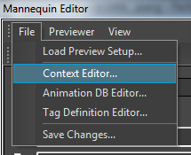
Там вы увидите различные контексты, которые у нас есть. Тот, на кого мы смотрим, является рабом.
Давайте double щелкнем по нему и зададим ему смещение как по положению, так и по повороту, чтобы он стоял перед мастером:
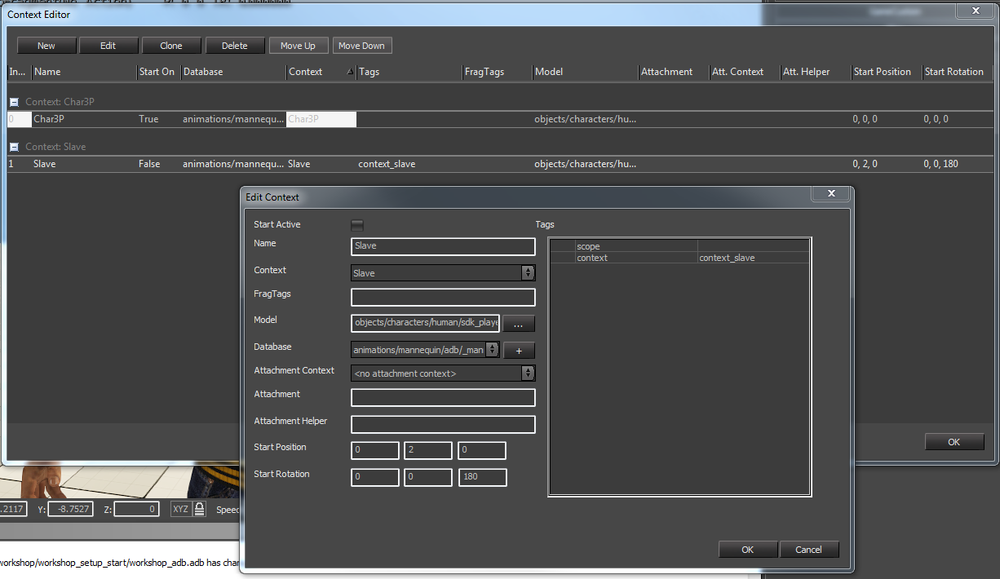
Значения положения и вращения, которые мы устанавливаем в этом окне, влияют только на предварительный просмотр редактора. Если вы хотите, чтобы ваши персонажи в игре строго выровнялись во время воспроизведения фрагмента, вам нужно будет, например, использовать процедурный клип для перемещения ваших персонажей в нужное положение при запуске анимации.
Как только это будет сделано, мы должны теперь видеть в редакторе обоих символов лицом друг к другу при каждом редактировании фрагмента с установленным тегом «context_slave»:
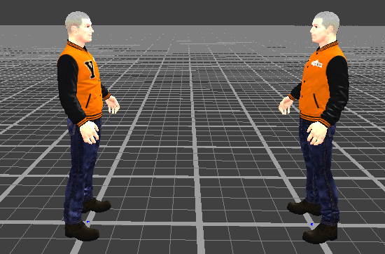
Теперь мы можем легко редактировать фактическое содержимое фрагментов. Давайте создадим короткую сцену, в которой один персонаж приветствует другого, а затем оглядывается.
Тем временем второй персонаж будет стоять без дела и пить, как только первый обернется.
Мы будем использовать следующие анимации: «stand_tac_idle_salute_rifle_3p_02», «relaxed_tac_idle_look180_rifle_3p_01» и «relaxed_tac_idle_drink_rifle_3p_01».
В конечном итоге настройка фрагмента должна выглядеть так:
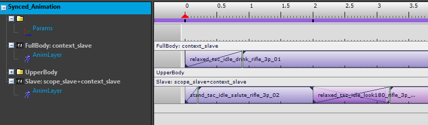
По сути, мы закончили настройку Mannequin. Теперь нам нужно обновить наш уровень и FlowGraph, чтобы воспроизвести эту сцену. Давайте вернемся к редактору уровней и создадим новый MannequinObject, ссылающийся на тот же контроллер действий, базу данных анимации и файлы модели.
Единственное, что нам осталось сделать, это поработить этого персонажа первым в нашем скрипте, а затем запросить "Synced_Animation" FragmentID.
При запросе FragmentID также важно не забыть установить тег "context_slave". Это легко сделать с помощью узлов EnslaveCharacter и PlayMannequinFragment.
В итоге график для «мастера» персонажа должен выглядеть так:
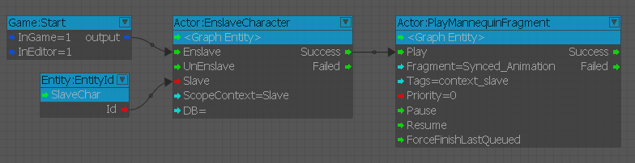
При запуске игры мы теперь должны видеть, как оба персонажа выполняют только что настроенные синхронизированные фрагменты:
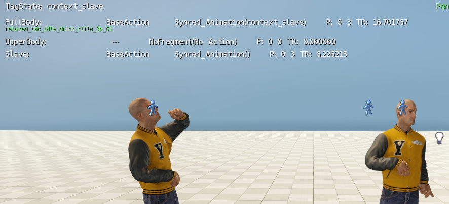